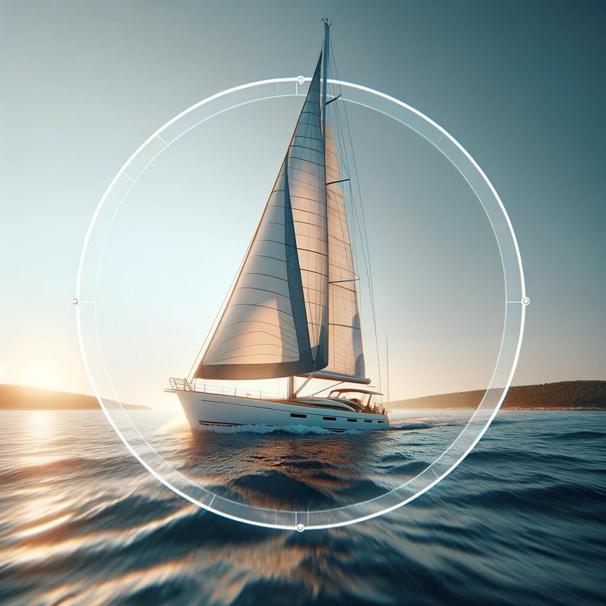
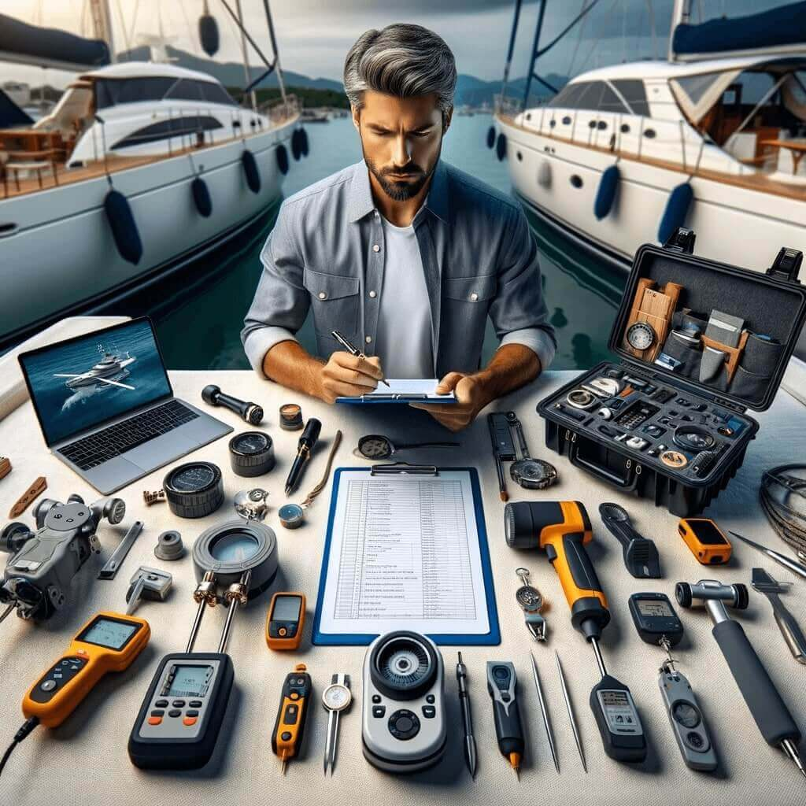
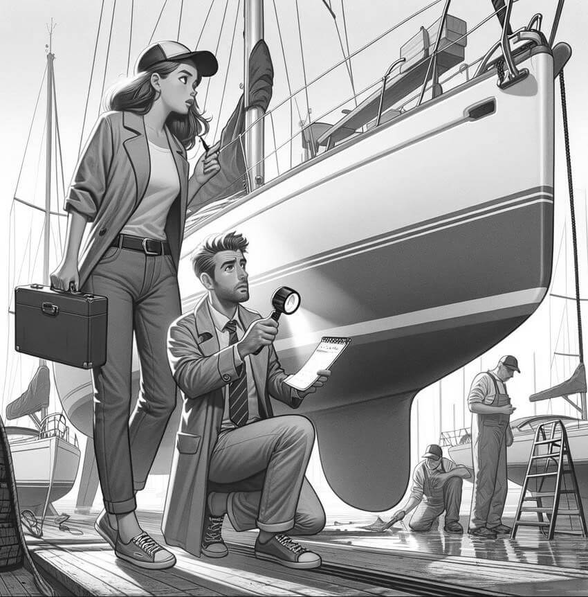
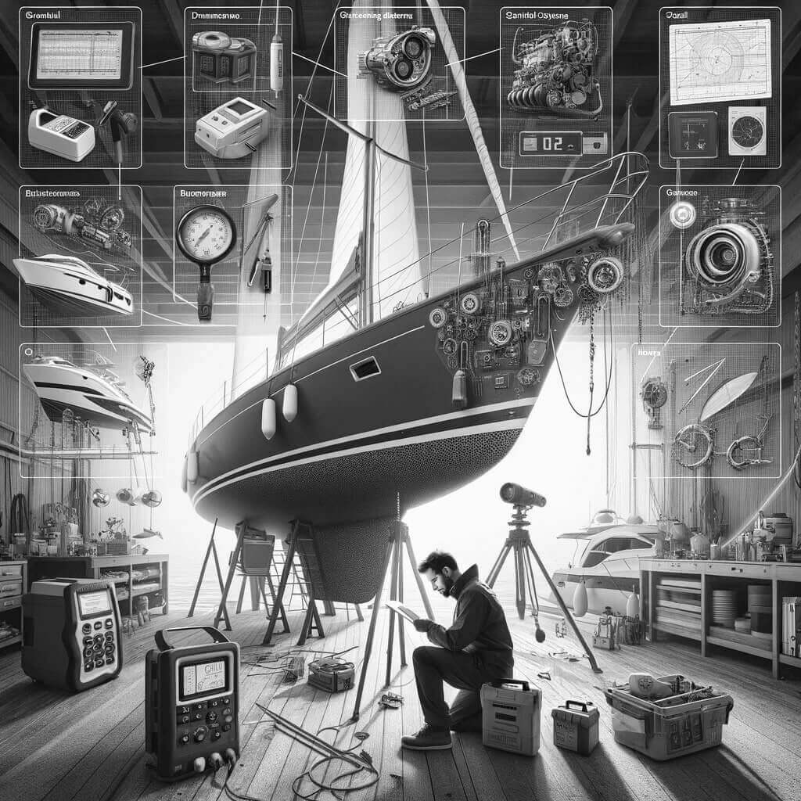
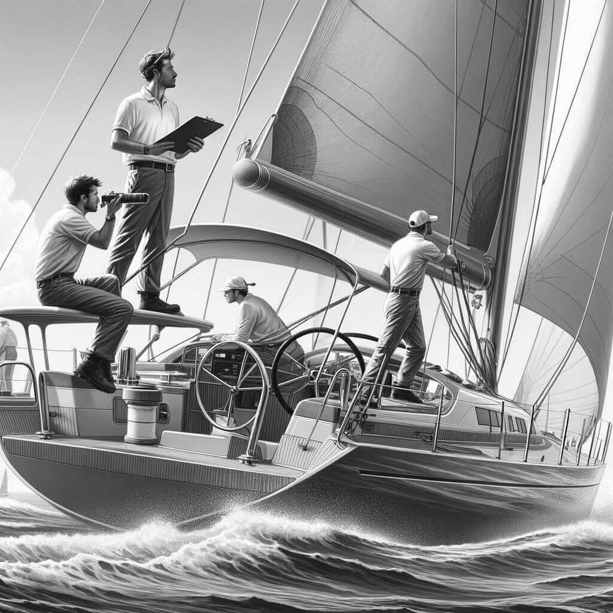

Предлагаю вам качественные услуги независимого и непредвзятого яхтенного эксперта, опирающиеся на признанные международные стандарты IIMS и ABYC.
Качественный сюрвей сделает принятие вами решения о покупке яхты понятным и обоснованным.
Привлекая мою экспертизу, вы получите детальный отчет о состоянии судна, который или подкрепит вашу уверенность в сделанном выборе, или наоборот, вовремя спасет от рискованного вложения и краха мечты.
Я работаю в России, Турции, Европе.
Возможны выезды и в более далекие регионы.
Со мной ваша мечта будет в надежных руках.

Добро пожаловать!
Мое образование:
- - Высшее инженерное образование (МИФИ)
- - Яхтенная квалификация IYT Yachtmaster Offshore
- - Диплом с высшим отличием по яхтенному сюрвею (Maritime Training Academy, UK)
- - Аккредитация международного института морского сюрвея (IIMS, UK)
- - Профессиональная квалификация по морской коррозии (Marine Surveying Academy, UK)
- - Авторизация (IIMS, UK) на проведение тоннажных измерений маломерных судов до 24 метров
Почему выбирают мои услуги?
Опыт и образование: Более десяти лет активного яхтинга в сочетании с глубоким инженерным бэкграундом и профильным сюрвейерским образованием высшего уровня обеспечивают наилучшее качество услуг на рынке.
Сюрвей только с отчетом: Мои профессиональные сюрвейерские отчеты становятся надежным руководством при торгах с продавцами, и путеводной картой по модернизации яхты для будущего яхтовладельца. Важный момент при покупке яхты состоит в том, что довольно часто для возврата задатка внесенного за оказавшуюся проблемной яхту нужен отчет профессионального сюрвейера с указанием проблем и степени их критичности.
Лучшая инвестиция: Как сказал мне мой заказчик: "Сюрвей с Денисом был моей лучшей инвестицией". Как это может быть? Очень просто. Я экономлю ваше время и даю структурированное знание. Это снижает ваши риски, а иногда экономит десятки тысяч долларов и дает вам уверенность при принятии решения в любую сторону.
Независимость: Я полностью независим от каких-либо брокеров, верфей, мастерских. Я не боюсь рассердить какого-нибудь продавца сообщив покупателю о проблеме с лодкой. Я не буду раздувать проблему, чтобы увеличить бюджет ремонта на верфи. Я всегда сообщаю правду, и мое мнение честно. Это очень много значит на рынке съемки яхт.
Профессиональная квалификация: Благодаря международно признаным регалиям, мои письменные заключения обладают реальным весом в глазах брокеров и продавцов. Постоянная вовлеченность в профессиональную сюрвейерскую деятельность дает мне возможность фокусированно развиваться, инвестируя в свои новые компетенции, чтобы предоставлять вам наивысшее качество услуг.
Виды сюрвеев и другие услуги
Сюрвей состояния перед покупкой
Самый распространенный тип сюрвея, который как правило заказывают будущие яхтовладельцы, чтобы перед тем как окончательно ударить по рукам с продавцом, получше узнать техническое состояние самой яхты и ее систем - двигателя, рангоута, электрики, и др. Данный сюрвей может выполняться как на суше, так и на воде, а также может сочетать в себе оба вида проверок, для максимально подробных результатов.
Морское испытание
Это выход в море, во время которого под нагрузкой проверяются ключевые силовые установки и морские системы. От двигателя и парусного вооружения до морского генератора и кондиционера. Некоторые дефекты можно обнаружить только в условиях нагрузки и только выйдя в море. В ходе таких испытаний могут появиться течи в корпусе, перегреться двигатель, не заработать какие-то системы, которые в марине работали без нареканий. Лучше узнать об этих проблемах до того, как станешь их обладателем.
Оценка стоимости яхты
Такая оценка редко является отдельно предлагаемой услугой, так как рыночная стоимость подержанной яхты неразрывно связана с ее состоянием. Данная финансовая оценка прилагается к отчету, включающему в себя оценку состояния. Не подумайте, что это официальная справка о цене яхты, с которой вы можете пойти к продавцу с требованием скидки. Финансовая оценка, как правило, нужна для страховки, получения кредита, в случае раздела имущества, получения наследства, и в прочих жизненных ситуациях.
Сюрвей для страховой компании
В некоторых случаях страховые компании хотят убедиться, что яхта, которую их просят застраховать, находится в надлежащем состоянии и что ее стоимость действительно соответствует той, на которую оформляется страховка. Для этого владелец яхты должен пригласить на осмотр аккредитованного сюрвейера, чей отчет будет для страховой компании подтверждением того, что они сами оценить не могут. По сути, данный вид сюрвея похож на сюрвей состояния перед покупкой, но он дополняется финансовой оценкой, и всегда выполняется на суше, чтобы надежно оценить состояние корпуса ниже ватерлинии.
Сюрвей для кредитной организации
Если вы берете морскую ипотеку, ваша яхта будет в залоге у банка пока вы не выплатите кредит. Соответственно, банку не нужен в залоге неликвид или актив, цена которого значительно ниже денег, которые он под него дает. Поэтому банк потребует сюрвейерский отчет о состоянии с финансовой оценкой. Это похоже на сюрвей для страховой компании, но с большим упором на модернизации яхты, влияющие на ее стоимость.
Сюрвей повреждений
Данный вид сюрвея проводится по запросу страховой компании для оценки масштабов и установления наиболее вероятных причин повреждений.
Тоннажные измерения
Данный "сюрвей" тесно связан с регистрацией яхты под флаг. Дело в том, что в большинстве стран существуют два основных вида регистрации - по первой и по третьей части судового регистров. Третья часть регистра предназначена для упрощенной регистрации частных яхт, доступная только для физлиц. Если же вы хотите зарегистрировать яхту на фирму, например, под британский флаг, то придется идти по первой части регистра, и в этом случае необходимо предоставить регистратору тоннажный сертификат, который я могу помочь вам выпустить.Для этого я должен провести ряд измерений судна и необходимые процедуры, которые может сделать только авторизованный сюрвейер.
Подготовка к перегону и перегон яхты
После того как яхта куплена зачастую наступает следующий этап - проведение регламентных работ, замена изношенных элементов (парусов, такелажа), нанесение нового необрастающего покрытия, установка дополнительных систем, а иногда и ремонт. В такой ситуации я, обладая необходимыми яхтенными и сюрвейерскими квалификациями, а также опытом рефита собственной яхты, готов обеспечить подготовку и доставку вашей красавицы до нового места базирования. Яхта перед отправкой в свое первое путешествие пройдет полное освидетельствование и необходимое для перехода обслуживание.
Квалификации
Статьи
Поиск подержанной яхты
Как выбрать сюрвейера
Сам себе сюрвейер
Организация сюрвея
Морское испытание
Сюрвейерский отчет